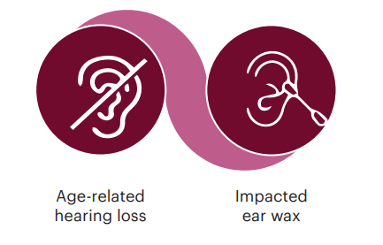
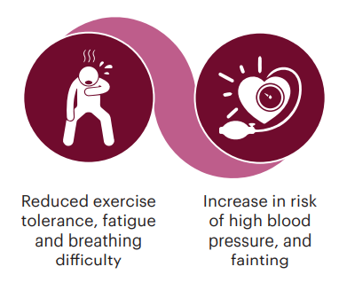
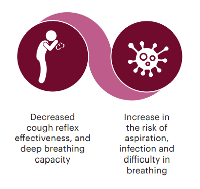
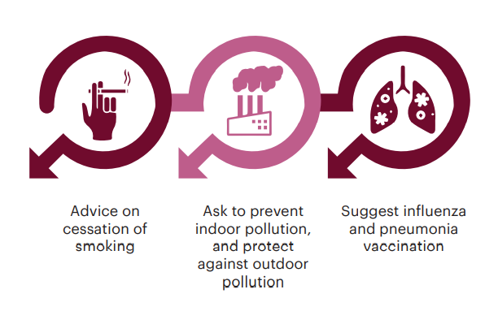

Module 1
Age-related changes in older people
Learning objectives
- To enumerate age-related physical and functional changes in old age.
- To enumerate the clinical implications and interventions of age-related problems.
Introduction
- Normal ageing produces changes in the structure and function of organs.
- Normal changes vary widely among older people and must be diff erentiated from pathological processes, to develop appropriate interventions.
- Older people and their caregivers often fail to recognize certain symptoms as abnormal.
- FLHWs should promptly recognize the pathological processes contributed by ageing and manage them with the available resources.
Physical and functional changes in old age and Interventions to address them
Changes in eyes and vision

Interventions

Changes in the ears and hearing function

Interventions

Changes in the mouth, sense of taste and smell

Interventions

Changes in the gastrointestinal system

Interventions

Changes in the cardiovascular system

Interventions

Changes in the respiratory system

Interventions

Changes in muscles, bones and joints

Interventions

Changes in the nervous system

Interventions

Changes in genito-urinary system

Interventions

Psychosocial changes in old age
- Older individuals take longer to learn, but complete learning can still occur in old age.
- Verbal ability is maintained with age.
- Individual’s ability to detect and respond to changes in the environment, such as the presence of a stimulus, declines with age.
- Short-term memory seems to weaken but long-term memory is preserved.
- Decline in social interaction occurs due to physical illnesses; sensory decline or depressed mood.
- Retirement may also lead to economic distress, changes roles, and loss of self-esteem.
Interventions
- Screen memory as well as mood for depression by means of the WHO-ICOPE screening questionnaire. (Refer to Module 2 for details).
- Teach family members about the prevention and early symptoms of cognitive decline and depression.